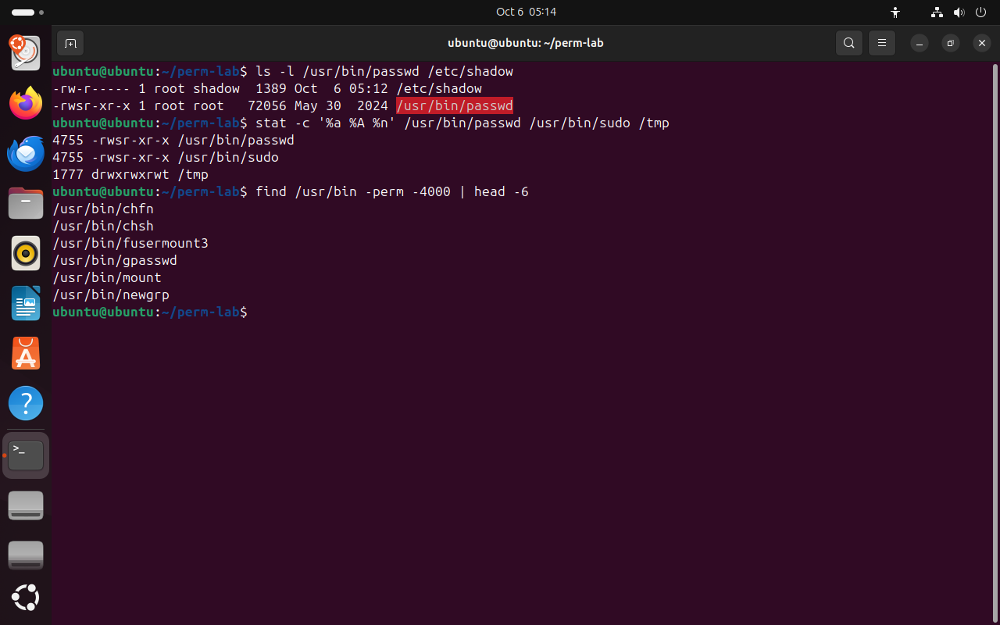
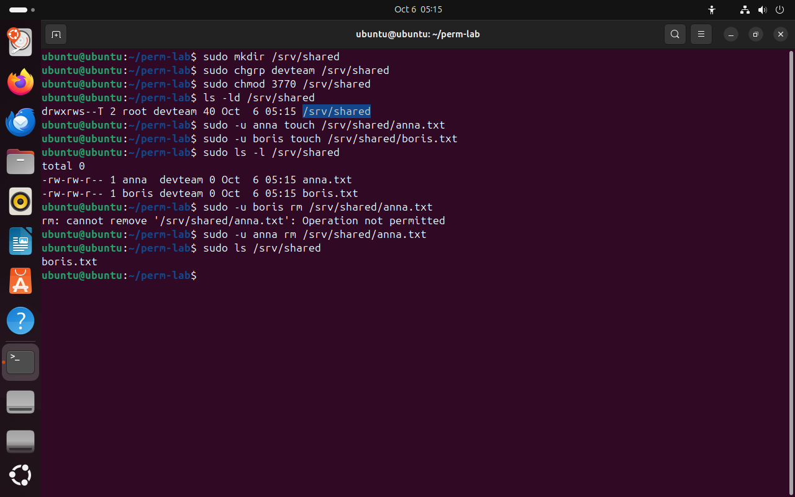
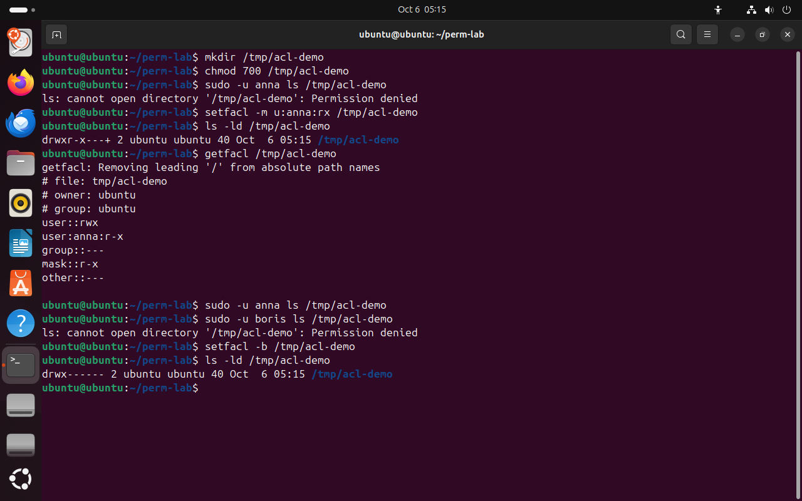

Часть 6 из 7
Специальные биты и списки доступа
В этой части разберём три специальных бита — setuid, setgid и sticky, соберём общий каталог, в котором участники не удаляют чужие файлы, и посмотрим, как ACL выдаёт права отдельному пользователю.
6.1 setuid: программа работает от имени владельца
Кроме девяти битов прав, у файла есть ещё три специальных. В числовой записи они составляют четвёртую цифру, которая стоит перед тремя обычными: setuid — 4, setgid — 2, sticky — 1. Права 4755 означают setuid и rwxr-xr-x.
Бит setuid на исполняемом файле запускает программу с правами владельца файла, кто бы её ни вызвал. Пример — программа passwd. Хеши паролей лежат в /etc/shadow, писать в который может только root, а менять свой пароль должен любой пользователь. Программа /usr/bin/passwd принадлежит root и имеет бит setuid, поэтому работает с правами root и записывает новый хеш. Что разрешить пользователю, программа решает сама: обычный пользователь меняет только свой пароль.
Ошибка в программе с setuid от root даёт права root любому пользователю. Поэтому таких программ в системе немного, и администраторы проверяют их список. Найти их можно командой find с условием -perm -4000: «установлен бит 4000».
ls -l /usr/bin/passwd /etc/shadow# passwd пишет в закрытый файлчто делает
Что делает команда. Выводит строки программы passwd и файла паролей.
По частям:
ls- вывести содержимое каталога
-l- подробный список: права, владелец, группа, размер
/usr/bin/passwd- что показать (абсолютный путь)
/etc/shadow- что показать (абсолютный путь)
stat -c '%a %A %n' /usr/bin/passwd /usr/bin/sudo /tmp# четвёртая цифра — специальные битычто делает
Что делает команда. Выводит права числом и буквами для passwd, sudo и /tmp; четвёртая цифра — специальные биты.
По частям:
stat- вывести сведения о файле из inode
-c '%a %A %n'- вывести только поля по шаблону '%a %A %n'
/usr/bin/passwd- о каком файле (абсолютный путь)
/usr/bin/sudo- о каком файле (абсолютный путь)
/tmp- о каком файле (абсолютный путь)
find /usr/bin -perm -4000 | head -6# первые программы с setuidчто делает
Что делает команда. Ищет в /usr/bin программы с битом setuid и выводит первые шесть.
По частям:
find- найти файлы и каталоги в дереве
/usr/bin- где искать (абсолютный путь)
-perm -4000- условие -4000: у файла установлены все указанные биты; 4000 — setuid
|- передать вывод левой команды на вход следующей
head- оставить только первые строки
-6- сколько первых строк оставить: 6
- 1s вместо x у владельца — setuid
- 24755: четвёртая цифра 4 — setuid
- 31777: sticky-бит у /tmp
- 4программы с setuid в /usr/bin


Весь снимок ↗passwd и sudo с битом setuid, /tmp со sticky-битом.
Что показывает снимок. У passwd и sudo права 4755 и буква s у владельца; у /tmp — 1777 и t; find нашёл в /usr/bin ещё несколько программ с setuid.
Где это пригодится. Список программ с setuid проверяют при аудите сервера: новая программа с setuid от root — повод выяснить, кто и зачем её поставил.
6.2 setgid и sticky: общий каталог
Бит setgid на каталоге вы уже видели на прошлом занятии: новые файлы в таком каталоге получают группу каталога, основная группа создателя на них не влияет. В строке ls -l он виден как s на месте x группы.
Sticky-бит (бит «прилипания») на каталоге меняет правило удаления. Обычно удалить файл может любой, у кого есть w на каталоге. Со sticky-битом файл удаляют или переименовывают только его владелец, владелец каталога и root. Так устроен /tmp: писать в него могут все, но удалить чужой временный файл нельзя.
Sticky-бит похож на общий холодильник в офисе: класть еду может каждый, а забрать — только тот, кто её подписал. Без этого правила любой сотрудник с доступом к холодильнику мог бы выбросить чужой обед.
Если у остальных нет права x, специальный бит показывается заглавной буквой: S вместо s, T вместо t. Бит при этом действует так же, заглавная буква сообщает только, что под ним нет права выполнения. Каталог с правами 3770 выводится как drwxrws--T: 3 = 2 + 1, то есть setgid и sticky вместе.
| Бит | Цифра | Где виден | На файле | На каталоге |
|---|---|---|---|---|
| setuid | 4 | s у владельца | программа работает от имени владельца | в Linux не действует |
| setgid | 2 | s у группы | программа работает с группой файла | новые файлы получают группу каталога |
| sticky | 1 | t у остальных | в Linux не действует | удалять файлы может только их владелец |
sudo mkdir /srv/sharedчто делает
Что делает команда. С правами root создаёт каталог /srv/shared.
По частям:
sudo- выполнить команду от имени другого пользователя, по умолчанию root
mkdir- создать каталог
/srv/shared- какой каталог создать (абсолютный путь)
sudo chgrp devteam /srv/sharedчто делает
Что делает команда. Отдаёт каталог /srv/shared группе devteam.
По частям:
sudo- выполнить команду от имени другого пользователя, по умолчанию root
chgrp- сменить группу файла
devteam- новая группа
/srv/shared- какой файл или каталог (абсолютный путь)
sudo chmod 3770 /srv/shared# setgid и sticky, rwx владельцу и группечто делает
Что делает команда. Ставит каталогу setgid и sticky и права rwx владельцу и группе.
По частям:
sudo- выполнить команду от имени другого пользователя, по умолчанию root
chmod- изменить права доступа
3770- первая цифра 3 — биты setgid и sticky; права числом: 7 — rwx владельцу, 7 — rwx группе, 0 — --- остальным
/srv/shared- какой файл или каталог (абсолютный путь)
ls -ld /srv/sharedчто делает
Что делает команда. Выводит строку каталога /srv/shared со специальными битами.
По частям:
ls- вывести содержимое каталога
-l- подробный список: права, владелец, группа, размер
-d- показать сам каталог, а не его содержимое
/srv/shared- что показать (абсолютный путь)
sudo -u anna touch /srv/shared/anna.txt# файл annaчто делает
Что делает команда. От имени anna создаёт файл в общем каталоге.
По частям:
sudo- выполнить команду от имени другого пользователя, по умолчанию root
-u anna- выполнить от имени пользователя anna
touch- создать пустой файл
/srv/shared/anna.txt- какой файл (абсолютный путь)
sudo -u boris touch /srv/shared/boris.txt# файл borisчто делает
Что делает команда. От имени boris создаёт файл в общем каталоге.
По частям:
sudo- выполнить команду от имени другого пользователя, по умолчанию root
-u boris- выполнить от имени пользователя boris
touch- создать пустой файл
/srv/shared/boris.txt- какой файл (абсолютный путь)
sudo ls -l /srv/sharedчто делает
Что делает команда. С правами root выводит файлы общего каталога с владельцами и группами.
По частям:
sudo- выполнить команду от имени другого пользователя, по умолчанию root
ls- вывести содержимое каталога
-l- подробный список: права, владелец, группа, размер
/srv/shared- что показать (абсолютный путь)
sudo -u boris rm /srv/shared/anna.txt# чужой файлчто делает
Что делает команда. От имени boris пытается удалить файл anna.
По частям:
sudo- выполнить команду от имени другого пользователя, по умолчанию root
-u boris- выполнить от имени пользователя boris
rm- удалить файл
/srv/shared/anna.txt- что удалить (абсолютный путь)
sudo -u anna rm /srv/shared/anna.txt# свой файлчто делает
Что делает команда. От имени anna удаляет свой файл.
По частям:
sudo- выполнить команду от имени другого пользователя, по умолчанию root
-u anna- выполнить от имени пользователя anna
rm- удалить файл
/srv/shared/anna.txt- что удалить (абсолютный путь)
sudo ls /srv/sharedчто делает
Что делает команда. С правами root выводит имена файлов общего каталога.
По частям:
sudo- выполнить команду от имени другого пользователя, по умолчанию root
ls- вывести содержимое каталога
/srv/shared- что показать (абсолютный путь)
- 1drwxrws--T: s — setgid, T — sticky без x у остальных
- 2новые файлы получили группу каталога devteam
- 3sticky-бит: boris не удаляет файл anna
- 4anna удалила свой файл, остался файл boris


Весь снимок ↗Каталог 3770: файлы получают группу devteam, чужой файл удалить нельзя.
Что показывает снимок. Каталог 3770 выводится как drwxrws--T; файлы anna и boris получили группу devteam; boris не удалил файл anna, anna удалила свой.
Где это пригодится. Так устраивают общие папки загрузок и обмена: все участники пишут, но никто не стирает чужие файлы.
6.3 ACL: права для отдельного пользователя
Три тройки описывают трёх «получателей»: владельца, одну группу и всех остальных. Иногда этого мало: например, нужно дать чтение каталога одному аналитику, не добавляя его в группу разработчиков. Для таких случаев есть списки доступа ACL (access control list).
Команда setfacl -m u:anna:rx каталог добавляет (modify) запись: пользователю anna — чтение и проход. getfacl выводит все записи. Если у файла есть ACL, в строке ls -l после прав появляется знак +: полный список прав тогда смотрят командой getfacl. setfacl -b удаляет все записи ACL.
ACL нужен как исключение из модели «владелец — группа — остальные». Если исключений становится много, модель лучше пересобрать на группах: права группы видны в обычном ls -l, а записи ACL — только через getfacl, и их легко пропустить при проверке.
mkdir /tmp/acl-demoчто делает
Что делает команда. Создаёт каталог для опыта с ACL.
По частям:
mkdir- создать каталог
/tmp/acl-demo- какой каталог создать (абсолютный путь)
chmod 700 /tmp/acl-demo# только владельцучто делает
Что делает команда. Закрывает каталог для всех, кроме владельца.
По частям:
chmod- изменить права доступа
700- права числом: 7 — rwx владельцу, 0 — --- группе, 0 — --- остальным
/tmp/acl-demo- какой файл или каталог (абсолютный путь)
sudo -u anna ls /tmp/acl-demo# anna — остальные: доступа нетчто делает
Что делает команда. От имени anna пытается открыть каталог.
По частям:
sudo- выполнить команду от имени другого пользователя, по умолчанию root
-u anna- выполнить от имени пользователя anna
ls- вывести содержимое каталога
/tmp/acl-demo- что показать (абсолютный путь)
setfacl -m u:anna:rx /tmp/acl-demo# запись ACL для annaчто делает
Что делает команда. Добавляет запись ACL: пользователю anna — чтение и проход.
По частям:
setfacl- изменить список доступа ACL
-m u:anna:rx- добавить или изменить запись u:anna:rx
/tmp/acl-demo- какой файл или каталог (абсолютный путь)
ls -ld /tmp/acl-demo# знак +что делает
Что делает команда. Выводит строку каталога; знак + после прав означает ACL.
По частям:
ls- вывести содержимое каталога
-l- подробный список: права, владелец, группа, размер
-d- показать сам каталог, а не его содержимое
/tmp/acl-demo- что показать (абсолютный путь)
getfacl /tmp/acl-demo# все записичто делает
Что делает команда. Выводит все записи ACL каталога.
По частям:
getfacl- вывести список доступа ACL
/tmp/acl-demo- какой файл или каталог (абсолютный путь)
sudo -u anna ls /tmp/acl-demo# теперь можночто делает
Что делает команда. От имени anna пытается открыть каталог.
По частям:
sudo- выполнить команду от имени другого пользователя, по умолчанию root
-u anna- выполнить от имени пользователя anna
ls- вывести содержимое каталога
/tmp/acl-demo- что показать (абсолютный путь)
sudo -u boris ls /tmp/acl-demo# у boris записи нетчто делает
Что делает команда. От имени boris пытается открыть каталог; записи для boris нет.
По частям:
sudo- выполнить команду от имени другого пользователя, по умолчанию root
-u boris- выполнить от имени пользователя boris
ls- вывести содержимое каталога
/tmp/acl-demo- что показать (абсолютный путь)
setfacl -b /tmp/acl-demo# убрать ACLчто делает
Что делает команда. Удаляет все записи ACL каталога.
По частям:
setfacl- изменить список доступа ACL
-b- удалить все записи ACL
/tmp/acl-demo- какой файл или каталог (абсолютный путь)
ls -ld /tmp/acl-demoчто делает
Что делает команда. Выводит строку каталога; знак + после прав означает ACL.
По частям:
ls- вывести содержимое каталога
-l- подробный список: права, владелец, группа, размер
-d- показать сам каталог, а не его содержимое
/tmp/acl-demo- что показать (абсолютный путь)
- 1без ACL anna относится к остальным: ---
- 2+ — у каталога есть ACL
- 3запись для anna: r-x
- 4маска — наибольшие права записей ACL
- 5у boris записи нет: отказ
- 6после setfacl -b знака + нет


Весь снимок ↗Запись ACL открывает каталог одному пользователю.
Что показывает снимок. Без ACL anna получала отказ; после setfacl у каталога появился знак +, getfacl показал запись user:anna:r-x и маску; boris по-прежнему получает отказ.
Где это пригодится. ACL нужен, когда одному человеку нужен доступ к каталогу, а добавлять его в группу нельзя, например внешнему аудитору.
Итоги части 6
- Специальные биты — четвёртая цифра прав: setuid 4, setgid 2, sticky 1.
- setuid на программе запускает её от имени владельца файла: так
passwdпишет в/etc/shadow. - setgid на каталоге передаёт новым файлам группу каталога; sticky разрешает удалять файлы только их владельцу.
SиTзаглавные — бит установлен, а права x под ним нет.- ACL — дополнительные записи прав для отдельных пользователей:
setfacl -m,getfacl, знак+вls -l.
В отчётСнимок каталога 3770 с отказом boris и объяснение каждой буквы в drwxrws--T.